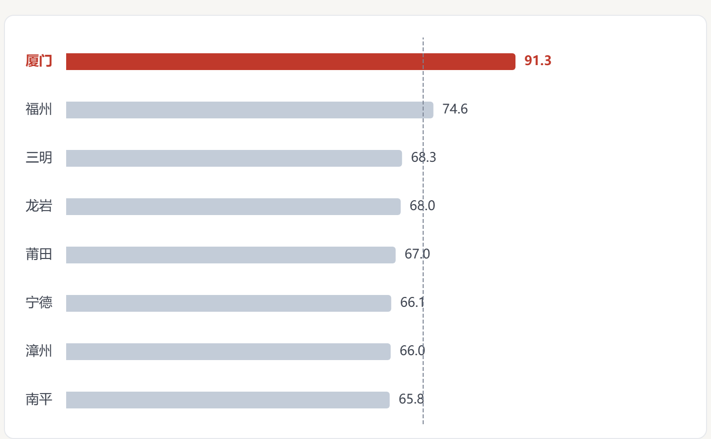

人口：第三
2024 年末，厦门常住人口 535 万。泉州 891 万、福州 850 万，厦门排在第三。
2024 年末常住人口，单位：万人。数据来自福建统计年鉴。
2024 年末，厦门常住人口 535 万。泉州 891 万、福州 850 万，厦门排在第三。
换一把尺子，91.0% 的厦门人住在城镇，比第二名福州高 16.7 个百分点；厦门是全省唯一超过 90% 的城市。
再换一把尺子，厦门人均 GDP 160,888 元，福州 167,787 元。不是第一，是第二。
图表数据未加载。关键数据：2022 年厦门 147,387 元，福州 145,936 元；2024 年厦门 160,888 元，福州 167,787 元。
2025 年三市人均 GDP 未发布，折线停在 2024 年。单位：元。
厦门 147,387 元，福州 145,936 元，相差 1,451 元。那一年厦门是全省第一。
福州 152,846 元，厦门 151,697 元。差距只有 1,149 元，但方向变了。
福州 167,787 元，厦门 160,888 元，相差 6,899 元。厦门只在 2022 年拿过第一。
03
数据录入完之后，脚本做了六项校验：城镇人口加乡村人口等于常住人口；城镇化率等于城镇人口除以常住人口；人均 GDP 约等于 GDP 除以年末人口；三次产业合计等于 GDP；城镇收入高于农村收入；以及九市 GDP 合计与全省、厦门六区 GDP 合计与全市的交叉核对。
第一版的人均 GDP 校验容差定在 1.5%。三处转录错误造成的偏差都在 0.7% 以内，全部漏了过去。后来把容差收紧到 0.7%，又新增「九市 GDP 合计 ≈ 全省」这一条，问题才露出来。
| 项目 | 原值 | 正确值 |
|---|---|---|
| 全省 GDP（亿元） | 57,661.02 | 57,761.02 |
| 福州 GDP（亿元） | 14,326.76 | 14,236.76 |
| 福州人均 GDP（元） | 157,787 | 167,787 |
容差定得比错误幅度还宽，校验就等于没有。
第三处错误改变了结论。修正前，页面写的是「厦门 2024 年夺回人均 GDP 第一」；修正后，福州是 167,787 元，厦门是 160,888 元。现在页面上的说法是：厦门只在 2022 年拿过第一，2023 年起低于福州。
04
还有一处不是我的转录错误：2023 年厦门六区 GDP 合计比全市少 20.01 亿元。放大重读年鉴原图后，六个区的数字都能对上，差额确实存在于原文。页面按原样呈现，没有替它补齐。
2025 年的数据也有缺口。缺口不是 0，也不该用推算值填上。
| 城市 | 常住人口 | 城镇化率 | 人均 GDP |
|---|---|---|---|
| 厦门 | 536.50 万 | 91.31% | 未发布 |
| 福州 | 852.10 万 | 74.63% | 未发布 |
| 泉州 | 未发布 | 未发布 | 未发布 |
泉州公报只公布户籍人口，没有常住人口；厦门、福州、泉州三市的人均 GDP 也没有印在 2025 年公报里。没有用「GDP ÷ 年末人口」去补，因为年鉴口径用的是年平均人口，混进同一列会造成口径不一致。对读者来说，留下空白比给出一个看似精确的数更诚实。
05
2024 年人口第三、城镇化率第一的格局没有变；2025 年厦门的城镇化率升到 91.31%，在已发布数据的城市中仍排第一。人均 GDP 仍然低于福州。
变化的是我对「做完」的理解：把图做出来只是开始，能把每个数字的来源、口径和缺口说清楚，才算真正完成。这件作品也让我确定接下来要补的两件事：采访和写作。数据能告诉我城市发生了什么，但要解释它为什么发生，还得回到人那里。
完整的来源、口径说明、数据缺口与修订记录，见数据页页脚。
